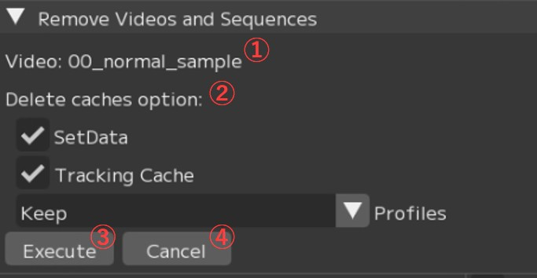
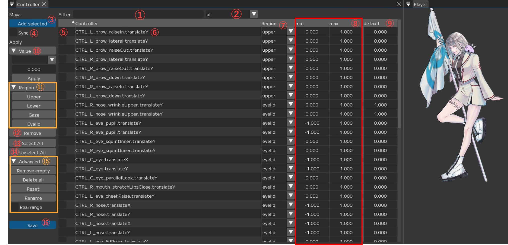
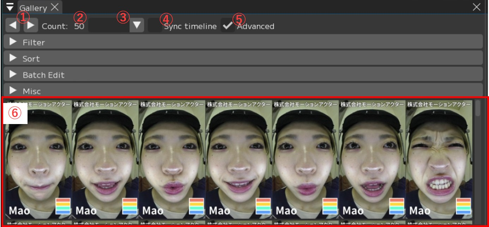
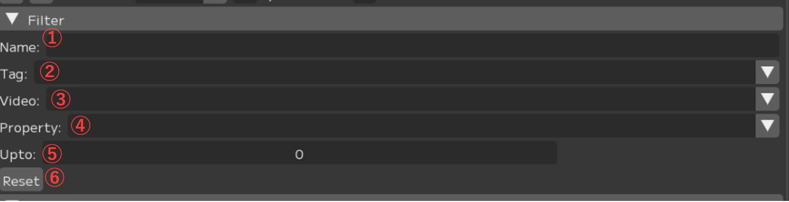
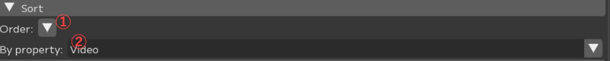
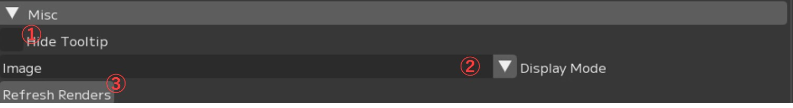
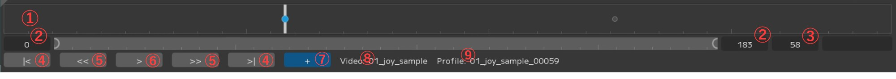
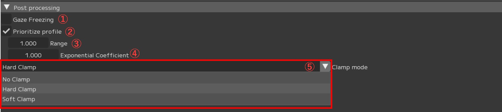
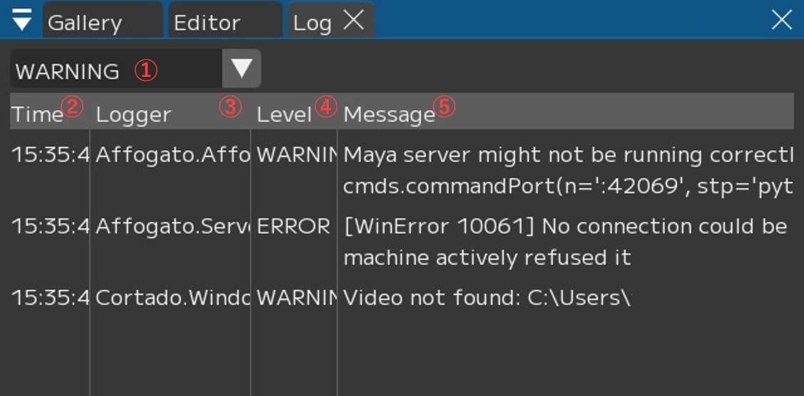

Window
This section explains the role of each functional window in FCS, and how to control display and operate each one.

① Videos:
Window for importing and processing videos
② Processor:
Window for configuring batch processing of multiple videos
③ Controllers:
Window for controller registration
④ Profiles/Gallery:
Window for registered Profiles
⑤ Editor: Window for Profile registration
⑥ Solver:
Window for detailed output settings
⑦ Log: Window for displaying FCS logs
Opens the Videos window.
The Videos window displays a list of imported HMC videos.
You can configure and process individual videos through the right-click context menu.

① Filter input field: Filter by video name
② [Import]: Import new videos
Clicking opens a dialog where you can select videos. You can select multiple videos by holding the Shift key.
③ Video table header. You can change the displayed content from the right-click menu.
④ Selection ON/OFF: Toggle batch processing target
⑤ Video name
Right-click to display a menu for individual animation output and other operations.
*See “Videos / Right-click menu” for details.
⑥ Selection ON/OFF (All): Toggle selection ON/OFF for all videos
⑦ Remove button: Displays the “Remove Videos and Sequences” window
Videos Right-click Menu

① Video name
② [Open]: Open the video
It will be displayed in the Player and Timeline.
③ [Remove]: Delete the video
Displays the “Remove Videos and Sequences” window.
④ [▼ Process]: Animation output for a single video
⑤ ☑ Reprocess: Re-analyze from scratch even if cache already exists
*Without the check, existing cache data will be used as-is for analysis.
It is generally recommended to keep this checked (☑).
⑥ Upload Options: Check (☑) the items you want to output to Maya
・☑ Animation: Animation data
・☑ Audio: Load audio data into Maya
・☑ Frames: Output sequential images of the video (*Loaded into Maya’s image plane)
・☑ LM Frames: Generate sequential images with landmarks
(*Loaded into Maya’s image plane)
Warning
“LM Frames” cannot be used with the ++ pipeline.
Also, please check (☑) only one of “Frames” or “LM Frames”.
If both are checked, the “LM Frames” images will not be output.
⑦ Export Options: Check (☑) the items you want to export
・☑ Playblast: Output and save a playblast as a mov format video
・☑ Scene: Output and save the Maya scene
⑧ [Start processing]: Execute processing with the settings from ⑥ and ⑦
⑨ [▼ Copy]
・Filename: Copy the video filename to clipboard
・Full path: Copy the full path of the video to clipboard
・Parent: Copy the parent directory path of the video to clipboard
Remove Videos and Sequences Window
Use this window to specify options and remove videos from FCS.
{kind=link}

① Video: Video name
② Delete caches option: Regarding cache data
・☑ SetData: Whether to also delete files in the set data (audio, sequential images)
・☑ Tracking Sequence: Whether to also delete the video’s tracking data
・Profiles: Regarding profiles added from the video to be deleted
Keep -> Profiles are maintained as-is.
Keep but unlink -> Profiles are maintained but the association with the video is removed.
(The profile’s video name becomes Unknown)
Delete -> Delete everything
③ [Execute]: Execute
④ [Cancel]: Cancel
Note
When you want to import a video with the same name but different content (e.g., due to duration changes), if you set Profiles to Keep, delete the video, and re-import it, the picked-up frame positions may shift, resulting in unexpected animation results.
Please use Delete or Keep but unlink as appropriate to remove the association with the previous video.
Opens the Processor window.
The Processor window provides batch processing functionality for multiple videos at once.
Videos with their checkbox turned ON in the Videos window will be targeted for processing.

① Output Folder: Specify the output destination
② Output Targets: Specify the content to output
・☑ Animation: Output animation data
・☑ Audio: Load audio data into Maya
・☑ Frames: Output sequential images of the video and load into Maya’s image plane
・☑ LM Frame: Generate sequential images with landmarks and load into Maya’s image plane
*Cannot be used with the “++ pipeline”
・☑ Playblast: Output and save a playblast as a mov format video
・☑ Scene: Save the Maya scene
・Format: Specify the Maya save format (.mb / .ma)
③ Advanced: Detailed settings for output processing
・☑ Reprocess: Re-analyze from scratch even if cache already exists
・Output Filename: Specify the output data name
Parameters for specifying folder names and video names
Note
You can set a custom output filename by changing the Output Filename.
{solver} : Solver name
{video} : Video filename
{user} : Windows username
{project} : Project folder name
{chara} : Character name
{actor} : Actor name
{%Y%m%d}, {%H%M%S} : Date (YYYYMMDD), Time (HHMMSS)
Setting it to {video} only will output using the imported video name.
④ [Start]: Start animation output
⑤ Progress bar: Displays processing status
⑥ Log: Displays the processing status log
This is the window for controller registration.
{kind=link}

① Filter: Filter by entered controller name
② [all▼]: Filter controllers
all / null / upper / lower / gaze / eyelid — Filters and displays the specified items.
Note
Region name (upper / lower / gaze / eyelid):
Displays the controllers registered to the current Region.
If you press Add Selected while the dropdown is set to a Region,
the controllers will be loaded with that Region already assigned.all: Displays controllers from all Regions.
Loading controllers while set to all will assign null (no Region) to the Region.null: Displays controllers that have no Region assigned.
If there is even one null entry in the controller table, you cannot save the registered controllers.
Please verify that no controllers have a null Region before saving.
③ Maya/Add selected: Register controllers selected in Maya
④ ☑ Sync: Synchronize value operations with Maya
Example: Value operations such as ⑧ min/max, ⑨ default
⑤ ☑ : Selection
⑥ Controller name: List of registered controller names
Right-click to display an individual menu. See “Controller name -> Right-click” below for details.
⑦ Region: Display and adjust the Region assigned to each controller.
You can change the Region individually with [Region (upper in the image) ▼].
⑧ min/max: Display and adjust the minimum/maximum values of controllers
Note
The maximum and minimum values are automatically entered, but please adjust them if the values are excessively large.
⑨ default: Display and adjust the default values of controllers
⑩ [▼Value]: Adjust values for checked (☑) controllers
・▼Min / Max / Default: Which value to adjust
・0.000: The value to input
・Apply: Apply the entered value to the controllers
⑪ [▼Region]: Set Region for checked (☑) controllers
upper / lower / gaze / eyelid
-> Sets to the selected Region.
⑫ Remove: Remove checked (☑) controllers from the table
⑬ [Select All]: Check (☑) all displayed controllers
⑭ [Unselect All]: Uncheck (□) all displayed controllers
⑮ [▼Advanced]
・[Remove empty]: Remove controllers with no Region assigned (null) from the table
・[Delete all]: Delete all registered controller information
・[Reset]: Revert to the last [Save]d state
・[Rename]: Open the “Replace controllers” window
*See “Batch renaming multiple controllers” below for details.
・☑ Rearrange: Enable reordering of the controller table via drag and drop
⑯ [Save]: Save controller changes and register them in controller Info
Controller Name -> Right-click
Right-clicking a controller name in the list displays a menu.

① [▼Copy&Paste]
・[Copy Name]: Copy the controller name
・[Copy Values]: Copy value settings
・[Copy Blendshapes]: Copy blendshapes
・[Paste Values]: Paste value settings
・[Paste Blendshapes]: Paste blendshapes
② [▼Reset]
・[To Save]: Revert name, values, etc. to the state at the time of [Save]
・[To Maya]: Revert name, values, etc. to Maya’s settings
③ [Rename]: Change the controller name.
The “Rename controller” window opens. Enter the desired name in “New Name”
and press [Rename].
Batch Renaming Multiple Controllers
Check (☑) the controllers you want to rename and press [▼Advanced] -> [Rename].
The “Replace controllers” window will open.

① [Add]: Add a string to the controller name
[front ▼] (front/back): Specify whether to add to the front or back of the controller name.
② [Replace]: Replace a specified string in the controller name
-> Enter the ‘original string’ and ‘replacement string’ respectively.
③ Preview: Preview of controller names before and after conversion
Pressing [Add] or [Replace] in ① or ② respectively will display a preview.
④ [Save]: Apply the rename
Confirm the Preview in ③, and if there are no issues, press [Save] to apply.
Gallery is a window that displays a list of created Profiles.
{kind=link}

① [◀][▶]: Change the number of profiles displayed per row
[◀]: Decrease (minimum 3) [▶]: Increase (maximum 10)
② Count: XX: Total number of registered profiles
③ Profile filter: Filter by matching criteria
・Blank: Display all profiles
・Enabled: Display profiles used for analysis (profiles registered with Enabled checked ☑)
・Disabled: Display profiles not used for analysis (profiles registered without Enabled checked)
・Default: Display profiles with default values, including Neutral
・Not Default: Display profiles with non-default values
・Neutral: Display profiles registered with Neutral checked
・No Tags: Display profiles with no tags set
・(Region) Enabled: Display profiles registered with the corresponding (Region) checked ☑
・(Region) Disabled: Display profiles registered without the corresponding (Region) checked
④ ☑ Sync timeline: When selecting a profile while the same video is open,
the timeline jumps to the corresponding frame
⑤ ☑ Advanced: Display advanced features. *See the sections at the bottom of the page for details.
⑥ List of registered profiles
About the border colors when profiles are added
Red: Profile with default values / unedited
Green: Profile registered with “Neutral” checked (☑)
Blue: Currently selected (being edited) profile
Black: Profile registered as “Disabled” with “Enabled” unchecked
White: Profile registered after retargeting
About ☑ Advanced
[▶ Filter]
Allows you to configure more detailed filtering.
{kind=link}

① Name: Display Profiles whose name contains the entered string
② Tag: Select a tag name from the dropdown to display Profiles with that tag
③ Video: Select a video name from the dropdown to display Profiles picked from that video
④ Property: Select from the dropdown to display matching Profiles
*This is linked with ③ Profile filter above.
⑤ Upto: Select the number of items to display
⑥ [Reset]: Reset filters
[▶ Sort]
Change the display order of Profiles.
{kind=link}

① Order [▼]: Change sort order between ascending and descending
② By property: Select the sort criteria
・Video: Sort by video name
・Created At: Sort by profile creation date/time
・Saved At: Sort by save date/time
・Name: Sort by profile Name
・Confidence: Sort by algorithm match degree (closest to predict results)
・Randomized: Display randomly
・(controller name): Sort by the value registered for the corresponding (controller)
[▶ Batch Edit]
You can batch change the enable/disable (ON/OFF) status or add tags to all displayed Profiles.

① Property: Specify which item to change settings for
・Enabled: Apply to all Regions
・(Each Region name): Apply to that Region
② ☑ [Apply]:
・Check (☑) to use the displayed Profiles for analysis
・Uncheck (□) to exclude them
③ Tag: Set tags in batch for all displayed Profiles
・Input field: Enter the tag name
・[Add]: Add the tag
・[Remove]: Remove the tag
[▶ Misc]
You can change the Gallery display format and other miscellaneous settings.
{kind=link}

① □ Hide Tooltip: Toggle display/hide of the registered Region diagram
② Display Mode: Change the Profile display format
・Image: Display with actor photos
・Render: Display with character model screenshots
③ [Refresh Renders]: Re-export screenshots for Display Mode > Render display
using the current Maya settings
This is the window for registering profiles.
Create facial expressions corresponding to images in Maya and load them into FCS, or create them in FCS and load into Maya.

① To Maya▼: Settings for whether to synchronize value operations with Maya
・To Maya: Transfer registered profile information to Maya
・From Maya at save: Retrieve adjustment data from Maya and apply to FCS when saving
・Both: Bidirectional synchronization between FCS and Maya
・No Sync: Do not synchronize FCS and Maya
② □ Neutral: Set whether this is a Neutral expression
Be sure to register exactly one as the default expression.
③ ☑ Enabled: Set whether to include this profile in analysis
④ Controller▼: Switch the slider label format for ⑥
・Controller: Display by controller name
・Value: Display by controller value
⑤ Displays the image of the selected frame
⑥ Slider: Displays registered controllers as sliders
You can adjust Maya controllers from within FCS
Note
You can directly input values by Ctrl+clicking the sliders on the right side of the controller window.
⑦ ▼Info: Display various information
[▼Region]
{kind=link}
Upper/Eyelid/Gaze/Lower:
Specify which Region’s expressions
are included in this profile
[▼Utils]
{kind=link}
① To Maya:
Send values edited in FCS to Maya’s controllers
② From Maya:
Send values edited in Maya to FCS
③ Predict:
A function that analyzes facial expressions from images and applies them to Maya
④ □ LM:
Toggle Landmark display
⑤ ☑ Image:
Toggle profile image display
[▼Filter]

① all ▼:
Display only controllers for the corresponding Region
(Upper / Lower / Gaze / Eyelid / all)
② Input field:
Filter controllers by entered text
[▼Reset]

Upper/Eyelid/Gaze/Lower/ALL:
Reset the values of the corresponding controllers to 0
[▼Tags]
{kind=link}
Add tags to profiles
Enter the tag name in the input field and press [+].
Operate the video timeline.
{kind=link}

① Timeline: Move the bar left and right to manually scrub through the video
② [0][183]: Change the video range; you can also change it by sliding the circles on both sides
③ [58]: Current frame number
④ |< >|: Move one frame backward/forward
⑤ << >>: Jump to registered profile positions
⑥ >: Play/stop the video (a pause button is displayed during playback)
⑦ [+]: Add a Profile at the current frame position
⑧ Video: Name of the currently displayed video
⑨ Profile: If a Profile has been created at the selected frame, its Profile name is shown
Right-click Menu
This is the menu that appears when you right-click on the timeline.
{kind=link}
① [▼Resolution]: Change the resolution of the displayed video
② [▼Sync]: Maya synchronization settings
・□ No Sync:
Do not synchronize the timeline with Maya
・□ To Maya:
Send FCS timeline values
to Maya’s time slider
・□ From Maya:
Send Maya’s time slider values
to the FCS timeline
*A separate plugin is required.
・□ Both:
Synchronize FCS and Maya timelines bidirectionally
*A separate plugin is required.
③ [▼Speed]: Playback settings
・Every Frame: Play every frame
・Real Time: Real-time playback
・□ Snap
・□ Loop: Loop playback
・□ Mute: Mute audio
Timeline bar display
Click the ▲ in the upper left to display the timeline bar.
Press [Hide tab bar] to hide the bar.

The Player displays the currently open video.

This is the window for configuring detailed animation output settings.
The default settings can generally be used as-is.

▼Global

① ☑ Fisheye: Optimized for processing videos shot with a fisheye lens
Uncheck this when analyzing videos shot with a wide-angle lens.
② Processing Pipeline: Specify the pipeline for processing videos
Note
For details on each pipeline, please refer to the Technical Manual.
▼Denoising

① [▼Parameters]: Processing parameter settings
② [▼Type]: Smoothing function settings
・Raw:
・Smoothing:
・Peak:
③ Weight: Set the strength
④ Reps: Set the number of repetitions
⑤ [Save current denoising profile]: Save the current settings as a preset
The “Save Denoising preset” window will open.
To register a preset, enter the “Preset name” and press [Save].

⑥ [▼Preset]: Displays registered presets
⑦ [Delete]: Delete the selected (☑) preset
▼Post processing
{kind=link}

① ☐ Gaze Freezing:
② ☑ Prioritize profile:
For frames where a Profile is registered, output using the exact same expression values as the Profile.
Prioritizes the retarget values at Profile registration over the analysis prediction values.
③ Range: Apply smoothing for the specified number of seconds before and after Profile frames (unit: seconds)
Example: Range 1.0 -> 0.5 seconds before and after are smoothed
④ Exponential Coefficient: Default value is 1.0 (linear)
Smaller values produce smoother curves (but deviate further from the analysis prediction values).
⑤ Clamp mode: Switch clamp processing settings
・No Clamp: No clamp processing
・Hard Clamp: Clamp the animation curve using the max - min values set in the Controller window
(no smoothing applied to the clamped range)
・Soft Clamp: Clamp the animation curve using the max - min values set in the Controller window
(smoothing applied to the clamped range)
You can review logs displayed in FCS.
{kind=link}

① [WARNING ▼]: Select the type of log to display
・INFO: Display information logs
・WARNING: Display warning logs
・ERROR: Display error logs
② Time: Time of occurrence
③ Logger
④ Level: Log type. *See ① for reference.
⑤ Message: Log details and message content
The latest log is always displayed at the bottom of FCS.

Menu Description Table of Contents
〇File: Session file management and basic operations
〇Settings: File/Settings - FCS global environment settings and behavior options
〇Window: Display and operation guide for various windows
〇Maya: Maya startup and integration
〇View: Workspace layout adjustment
〇Explore: Browse files in Windows Explorer from FCS
〇Info: Version information, etc.